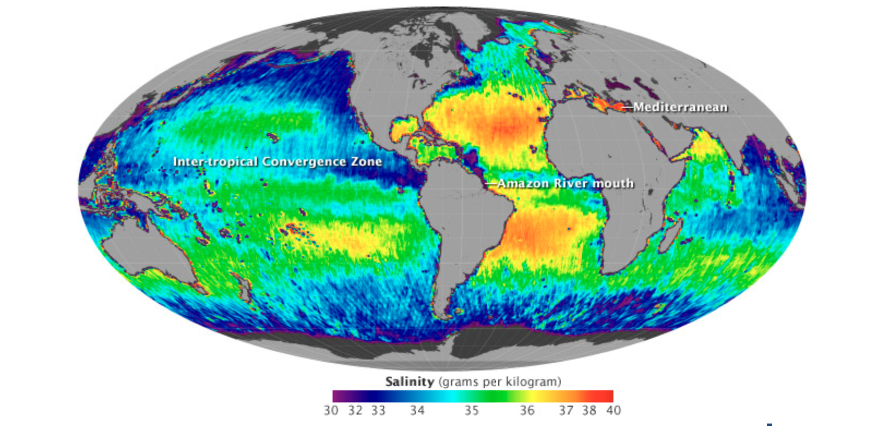
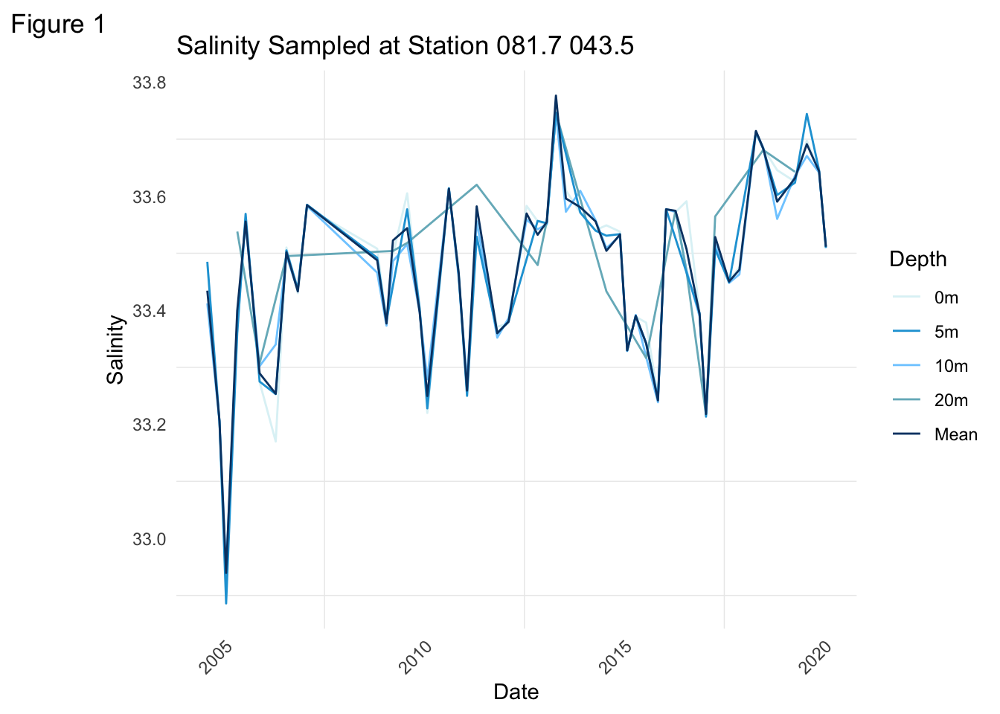
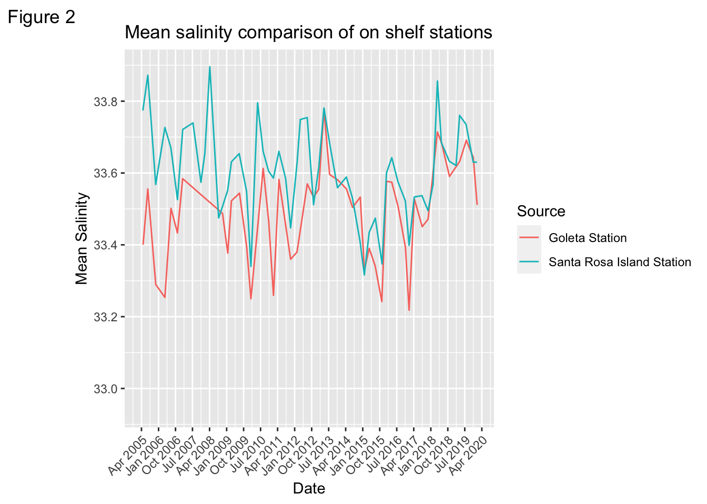
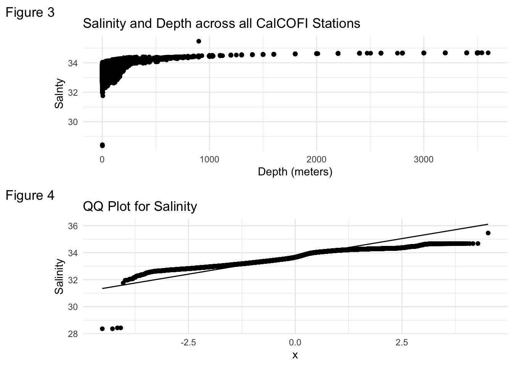
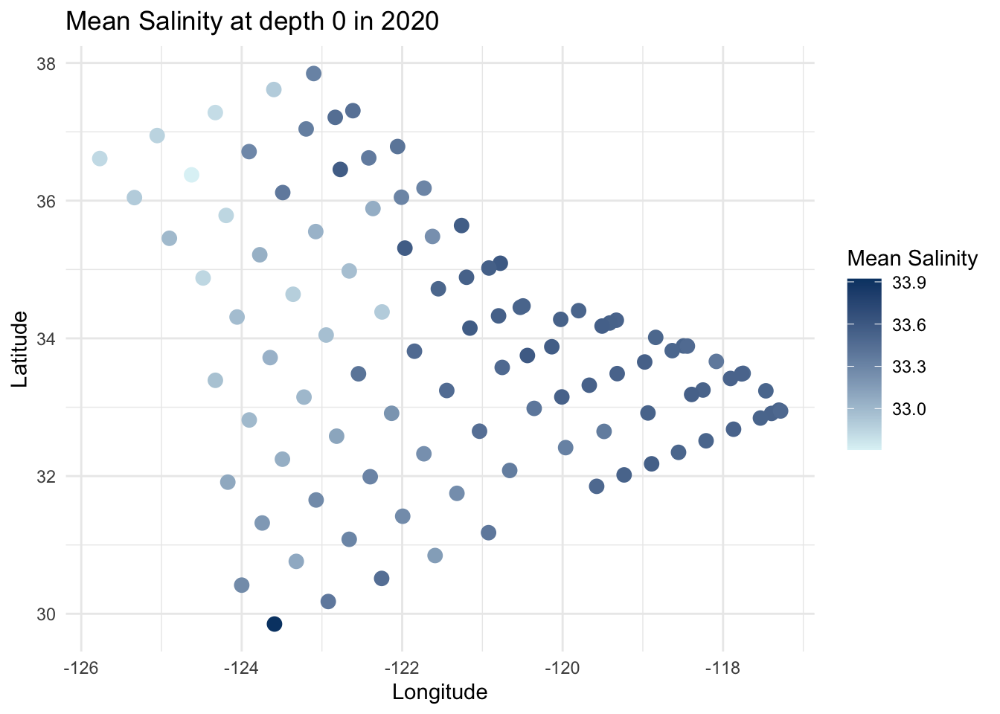
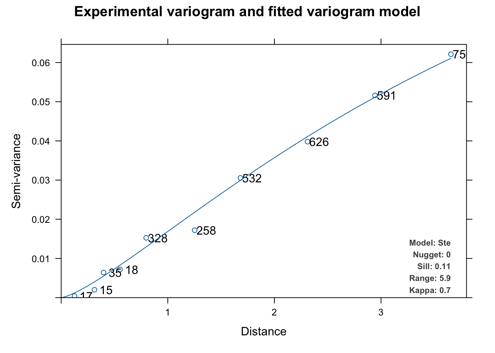
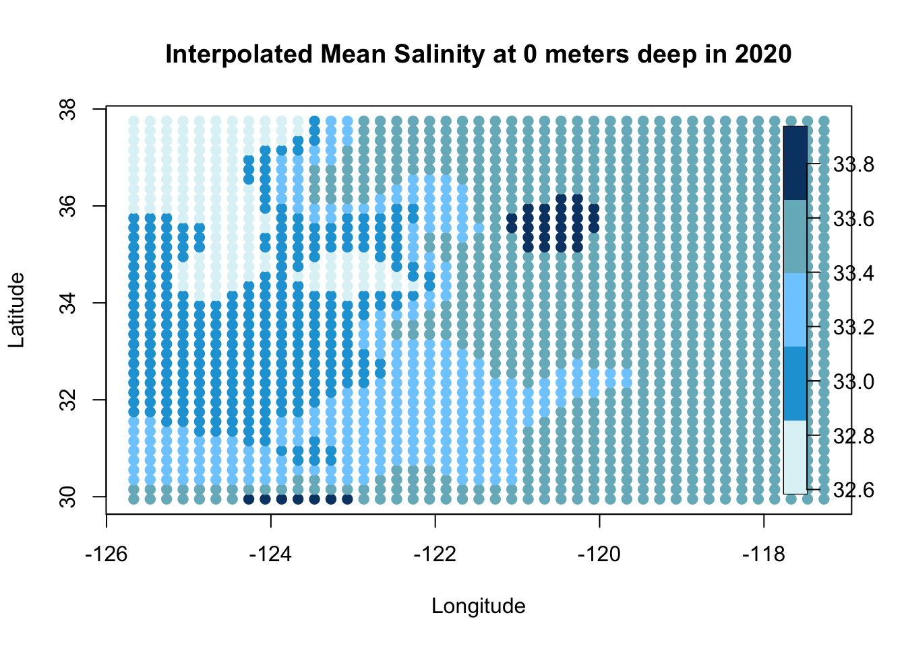

Exploring Salinity levels in the California Coastal Ecosystem
Ocean Analysis
Geospatial
Linear Regression
Kriging
Published
December 12, 2023

Image from NASA
The Question
How big of an effect does depth have on salinity levels off the California Coast? Does temperature play as big of an effect?
Introduction
The effect of climate change on salinity is one that has seldom been studied. Along with hypoxia (an inadequate amount of oxygen), salinity levels in the ocean is one that often gets overlooked. Studies find that changes in salinity, due to both climate change and land change, can have large effects on both coastal and estuarine ecosystems. Salinity in the ocean can be affected by climate change in multiple ways. Extreme flooding and droughts affect freshwater availability and thus impact salinity within ecosystems.1 Salinity impacts the climate through its inverse relationship with sea ice cover, thus emitting heat and carbon into the planet. Sea salinity specifically is an important variable for studies related to the water cycle, ocean- atmosphere intereactions, and climate change. 2
Because climate change can pose such a threat to ecosystems due to a change in salinity, I wanted to explore the properties of salinity a bit more to better understand exactly how they are adversely affected by climate change. In 2010, NASA starting collecting sea surface salinity data through satellites. But another group started collecting samples of salinity long before NASA, and they went deeper than surface level.
Data
My analysis will utilize CalCOFI data 3. CalCOFI is a oceanographic and marine research program that samples quarterly data at stations along the California Coast. Sampling since 1949, they are one of the longest oceanographic time series to exist. Their oceanographic data includes measurements such as temperature, salinity, and dissolved inorganic carbon. Their marine ecosystem data includes observations of marine mammals, seabirds, and fish eggs/larvae, to name a few. The data I will utilize is comprised in two different datasets.
the bottle database : contains oceanographic data measured from seawater samples at CalCOFI stations. This dataset contains the two parameters I will be looking into in this analysis: salinity and temperature. The bottle database spans the entire timeseries, from 1949 to present day.
the cast table: contains the metadata. This table includes date, time, latitude, longitude, weather, depth, etc. for each CTD cast ever completed on a CalCOFI cruise.
Analysis
My analysis will look into the relationship between depth, salinity and temperature. Because I am using parameters from both datasets, I will join the bottle database and cast table together. To get the most consistent sampling, I will only be look at data from 2004 to 2020.
We will start by loading in the cleaned dataset and necessary packages.
CalCOFI samples are taken at varying depths at each station. Therefore, deciding how to accurately compare salinity across depth can be tricky. I will first explore how different salinity at different depths is from the mean. To do this, I am going to look at station only. This on shelf station is off the coast of Goleta.
Code
#get data for only santa barbara station, take mean salinity for each date across all depthssb_station_mean <- bottle_cast %>%group_by(Sta_ID, Date) %>%summarise(mean_salinity =mean(Salnty)) %>%filter(Sta_ID =="081.7 043.5")#make data column of type data for time series graphingsb_station_mean$Date <-as_date(sb_station_mean$Date, format ="%m/%d/%Y")# create a new dataframe for each depth we are interested in at sb station#make all date columns of type datasb_station_depth_0 <- bottle_cast %>%filter(Sta_ID =="081.7 043.5", Depthm ==0)sb_station_depth_0$Date <-as_date(sb_station_depth_0$Date, format ="%m/%d/%Y")sb_station_depth_5 <- bottle_cast %>%filter(Sta_ID =="081.7 043.5", Depthm ==5)sb_station_depth_5$Date <-as_date(sb_station_depth_5$Date, format ="%m/%d/%Y")sb_station_depth_10 <- bottle_cast %>%filter(Sta_ID =="081.7 043.5", Depthm ==10)sb_station_depth_10$Date <-as_date(sb_station_depth_10$Date, format ="%m/%d/%Y")sb_station_depth_20 <- bottle_cast %>%filter(Sta_ID =="081.7 043.5", Depthm ==20)sb_station_depth_20$Date <-as_date(sb_station_depth_20$Date, format ="%m/%d/%Y")# rename salinity column name to match column name of sb_station meansb_station_depth_0 <- sb_station_depth_0 %>%rename(Salinity = Salnty)sb_station_depth_5 <- sb_station_depth_5 %>%rename(Salinity = Salnty)sb_station_depth_10 <- sb_station_depth_10 %>%rename(Salinity = Salnty)sb_station_depth_20 <- sb_station_depth_20 %>%rename(Salinity = Salnty)sb_station_mean_depth <- sb_station_mean %>%rename(Salinity = mean_salinity)# Add a depth column to each dataframe for plotting purposessb_station_depth_0$Depthm <-"0m"sb_station_depth_5$Depthm <-"5m"sb_station_depth_10$Depthm <-"10m"sb_station_depth_20$Depthm <-"20m"sb_station_mean_depth$Depthm <-"Mean"# Combine all the dataframescombined_data <-bind_rows(sb_station_depth_0, sb_station_depth_5, sb_station_depth_10,sb_station_depth_20, sb_station_mean_depth)# Plot all depths and meanggplot(combined_data, aes(x = Date, y = Salinity, color = Depthm)) +geom_line() +labs(color ="Depth", title ="Salinity Sampled at Station 081.7 043.5",tag ="Figure 1") +theme_minimal() +scale_color_manual(values =c("#def3f6", "#1da2d8", "#7fcdff","#76b6c4","#064273"),breaks =c("0m", "5m", "10m", "20m", "Mean")) +theme(axis.text.x =element_text(angle =45, hjust =1),panel.grid.major =element_blank(), )

The mean salinity in this graph doesn’t look too different from the salinites at the different depths. However, we are only sampling 20 meters deep here. Is this because this station is in shallower waters so the variance is smaller for mean salinity, and our values are therefore pretty close to the mean? Or does salinity at all depths stay pretty consistent? We will see if we can get any insights into this question by plotting the mean salinity of the station above, and a different station that is a bit farther off the coast. The second station we will be looking at is directly behind Santa Rosa Channel Island. Let’s see how these two station’s mean salinity levels compare.
Code
#get mean salinity levels for santa rosa station ci_station_mean <- bottle_cast %>%group_by(Sta_ID, Date) %>%summarise(mean_salinity =mean(Salnty)) %>%filter(Sta_ID =="083.3 051.0")sb_station_mean$Source <-"Goleta Station"ci_station_mean$Source <-"Santa Rosa Island Station"# add source column for plotting purposes#make date column of time date for time seriesci_station_mean$Date <-as_date(ci_station_mean$Date, format ="%m/%d/%Y")#combine two stations into one dataframeci_goleta_stations<-rbind(ci_station_mean , sb_station_mean )# plot mean salinity levels for each stationggplot(ci_goleta_stations, aes(x = Date, y = mean_salinity, color = Source)) +geom_line() +labs(x ="Date", y ="Mean Salinity", title ="Mean salinity comparison of on shelf stations",tag ="Figure 2") +scale_x_date(labels =date_format("%b %Y"), date_breaks ="9 month", limits =as.Date(c("2005-04-01", NA))) +scale_y_continuous(breaks =c(33.0, 33.2, 33.4, 33.6, 33.8)) +theme(axis.text.x =element_text(angle =45, hjust =1))

Now this looks a bit different! Santa Rosa Island station has a noticeable and consistent lead over the Goleta station mean salinity. We know depth is likely playing into this difference, since the main different between the two stations is that the Santa Rosa one is in deeper waters. This confirms our interest in continuing this analysis. Onto a linear regression!
Before we run a linear regression, let’s see how our data looks to prevent violating any OLS assumptions. We will plot the data by itself and then create a qq plot to see if our data looks at all normal!
Code
data_plot <-ggplot(data = bottle_cast, aes(x = Depthm, y = Salnty))+labs(title ="Salinity and Depth across all CalCOFI Stations", x ="Depth (meters)",tag ="Figure 3")+geom_point()+theme_minimal()p <-ggplot(bottle_cast, aes(sample = Salnty))+labs(title ="QQ Plot for Salinity", y ="Salinity",tag ="Figure 4")+theme_minimal()qq <- p +stat_qq() +stat_qq_line() grid.arrange(data_plot, qq, ncol=1)

CalCOFI has one deep water station that samples up to 3500 meteres deep, hence the shape of the graph in Figure 3. Our QQ Plot has a few outliers, but overall looks fairly normal.
Simple Linear Regression
Code
mod <-lm(Salnty ~ Depthm, data = bottle_cast)# model tabletable_output <- sjPlot::tab_model(mod,transform =NULL,pred.labels =c("Intercept", "Depth"), show.p =TRUE,p.style =c("numeric_stars"),p.threshold =c(0.10, 0.05, 0.01),dv.labels =c("Salinity"),string.p ="p-value",show.r2 =TRUE,title ="Linear Regression Model for Depth",digits =3)table_output
Linear Regression Model for Depth
Salinity
Predictors
Estimates
CI
p-value
Intercept
33.448 ***
33.446 – 33.450
<0.001
Depth
0.002 ***
0.002 – 0.002
<0.001
Observations
160971
R2 / R2 adjusted
0.519 / 0.519
* p<0.1 ** p<0.05 *** p<0.01
The model above tells us that the predicted salinity at 0 meters deep in the California Coastal ecosystem is 33.45 g/kg. The salinity increases, on average, .0015 g/kg with each meter increase in depth. The \(R^2\) for this model is .5192. Meaning that about 52% of our variance can be explained by the depth variable alone.
Depth seems to be a fairly strong predictor of salinity levels, but perhaps another variable is concurrently affecting the salinity levels. We can control for omitted variable bias by adding in another variable to our model. Temperature also changes with depth, so let’s check how our model changes when we run a multiple linear regression with temperature as a predictor.
Multiple Linear Regression
Code
mod <-lm(Salnty ~ Depthm+ T_degC, data = bottle_cast)# model tablesjPlot::tab_model(mod,transform =NULL,pred.labels =c("Intercept", "Depth", "Temperature (Celsius)"), show.p =TRUE,p.style =c("numeric_stars"),p.threshold =c(0.10, 0.05, 0.01),dv.labels =c("Salinity"),string.p ="p-value",show.r2 =TRUE,title ="Linear Regression Model for Depth and Temperature",digits =3)
Linear Regression Model for Depth and Temperature
Salinity
Predictors
Estimates
CI
p-value
Intercept
34.300 ***
34.294 – 34.307
<0.001
Depth
0.001 ***
0.001 – 0.001
<0.001
Temperature (Celsius)
-0.064 ***
-0.064 – -0.063
<0.001
Observations
160969
R2 / R2 adjusted
0.663 / 0.663
* p<0.1 ** p<0.05 *** p<0.01
It seems as though predicted salinity levels decrease by .064 for every celsius degree increase in water temperature, holding fixed the depth of the sample. Our \(R^2\) for this model increased by about .14. While our \(R^2\) did increase, conveying a greater amount of variance explained by these two predictor variables, it is important to note that \(R^2\) mechanically increases as more independent variables are added to the regression. With an \(R^2\) of .66, we can say that about 66% of variance in our data is explained by both depth level and temperature.
To finish off my analysis, I want to spatially interpolate average salinity levels in the ocean to visualize how salinity changes geographically. To do this, I will use kriging. Kriging relies on an estimated variogram, a function that describes the relationship between the distance and the covariance in “Z”. In my case, “Z” is the average salinity levels. Prior to doing this, I will make some decisions about filtering my data for the interpolation. The data has many observations at each unique geographic site ( since multiple samples are collected at each station each year). Since the variogram only takes in unique geometries, I will filter for only the year 2020, the most recent year in the dataset. Since each station took a sample at 0 meters, I will also filter to take the mean salinity across depth 0. This will allow the interpolation to not be skewed by the depth, since we know by now that depth explains a significant amount of the variance for predicting salinity. Let’s plot this new filtered data that we will use for the variogram.
Variogram
Code
bottle_cast_mean_interpolation <- bottle_cast %>%group_by(Sta_ID, Date) %>%filter(Depthm ==0 ) %>%summarise(mean_salinity =mean(Salnty, na.rm =TRUE),Lat_Dec =first(Lat_Dec),Lon_Dec =first(Lon_Dec),.groups ="drop") bottle_cast_mean_interpolation$Date <-as.Date(bottle_cast_mean_interpolation$Date, format ="%m/%d/%Y")bottle_mean_2020<-bottle_cast_mean_interpolation %>%filter(grepl("20$", format(Date, "%Y")))bottle_mean_2020 %>%ggplot(mapping =aes(x = Lon_Dec, y = Lat_Dec, color = mean_salinity)) +geom_point(size =3) +labs(title ="Mean Salinity at depth 0 in 2020",x ="Longitude",y ="Latitude",color ="Mean Salinity")+scale_color_gradient(low ="#def3f6", high ="#064273") +theme_minimal()

This plot looks exactly like the map of CalCOFI stations, as we would expect it to. Now that we have one point for each station, we can create the variogram.
Code
bottle_mean_2020_sf <-st_as_sf(bottle_mean_2020, coords =c("Lon_Dec", "Lat_Dec"), crs =25832) %>%cbind(st_coordinates(.)) %>% dplyr::select(X, Y, mean_salinity)v_mod_full <- automap::autofitVariogram(mean_salinity~1,bottle_mean_2020_sf )v_mod <- v_mod_full$var_model # just the model of the variogramhead(v_mod)
model psill range kappa
1 Nug 0.0000000 0.000000 0.0
2 Ste 0.1132133 5.884045 0.7
Code
plot(v_mod_full)

The model seems to fit the data quite well! Time to interpolate!
colors =c("#def3f6", "#1da2d8", "#7fcdff","#76b6c4","#064273")plot(OK$x, OK$y, col = colors[cut(OK$var1.pred, breaks =5)],pch =20, cex =1.5,xlab ="Longitude",ylab="Latitude",main ="Interpolated Mean Salinity at 0 meters deep in 2020" )# Adding color legend for continuous scaleimage.plot(1, 1, zlim =range(OK$var1.pred), col = colors, legend.only =TRUE)

The interpolation follows a similar trend as our original data, but we can now visualize how mean surface level salinity likely varied in the California Coastal Ecosystem in 2020! The interpolation seems to suggest that perhaps latitude also has an effect on salinity levels. Let’s do one last quick regression, adding latitude as a predictor!
One last multiple linear regression!
Code
mod <-lm(Salnty ~ Depthm+ T_degC+ Lat_Dec , data = bottle_cast)sjPlot::tab_model(mod,transform =NULL,pred.labels =c("Intercept", "Depth", "Temperature", "Latitude"), show.p =TRUE,p.style =c("numeric_stars"),p.threshold =c(0.10, 0.05, 0.01),dv.labels =c("Salinity"),string.p ="p-value",show.r2 =TRUE,title ="Linear Regression Model for Depth",digits =3)
Linear Regression Model for Depth
Salinity
Predictors
Estimates
CI
p-value
Intercept
34.087 ***
34.057 – 34.117
<0.001
Depth
0.001 ***
0.001 – 0.001
<0.001
Temperature
-0.063 ***
-0.063 – -0.062
<0.001
Latitude
0.006 ***
0.005 – 0.007
<0.001
Observations
160969
R2 / R2 adjusted
0.663 / 0.663
* p<0.1 ** p<0.05 *** p<0.01
We weren’t able to describe any more of the variance when adding latitude, so perhaps latitude doesn’t have as much of an effect on salinity as we expected in this data. We don’t cover a huge amount of latitude, so we cannot conclude that latitude does not affect salinity overall.
Conclusions
We have looked into salinity in many different ways! This analysis discovered some different properties of salinity that can better help us to understand how the salinity in the CCE can be affected by climate change. Salinity tends to increase with depth. We saw through the simple linear regression model that depth alone explains a lot of the variance in predicting salinity levels. Temperature seems to play into salinity levels, but not nearly at the same rate that depth does. A more consistent depth sampling method would have allowed us to draw more conclusions about the role that depths plays in predicting salinity levels.
Footnotes
University of North Florida. (2023, July 13). Salinity changes threatening marine ecosystems, new study shows. Phys.org. https://phys.org/news/2023-07-salinity-threatening-marine-ecosystems.html↩︎
Olofsson, P., & Virts, K. (2023, March 7). Addressing needs for sea surface salinity data. Earthdata. NASA. https://www.earthdata.nasa.gov/news/updated-smap-sss-data-products↩︎
California Cooperative Oceanic Fisheries Investigations. (2020). CalCOFI Data Collection 2020. Scripps Institution of Oceanography. https://calcofi.org/ccdata/datasets/2020.html↩︎